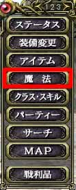
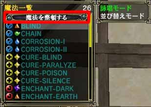
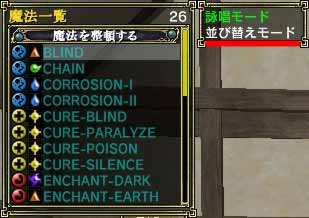

目次
>
ゲームについて
>
日本Falcom攻略
>
Sorcerian Online
>
チュートリアル
>
魔法
Sorcerian Online
|
概要
|
チュートリアル
|
|
魔法 に戻る
|
魔法の並び替え
整頓
並び替えモード
整頓
新しい魔法を取得すると、その魔法は魔法ウィンドウの一番下に登録されていきます。しかし、
魔法をアルファベット順に整頓する
ことができます。
魔法を整頓するにはメニュー1ページ目の「
魔法
」を選ぶ、もしくは「
M
」キーを押して魔法ウィンドウを表示します。そして、一番上の「
魔法を整頓する
」を選びエンターキーを押すことで整頓できます。
 
(左：メニュー、右：魔法ウィンドウ)
並び替えモード
「並び替えモード」を選ぶことにより、魔法ウィンドウに
表示される魔法を自分の好きな順番に並び替えることができます
。
「並び替えモード」を使うには、メニュー1ページ目の「魔法」を選ぶ、もしくは「M」キーを押して魔法ウィンドウを開きます。次にTabキーを押して隣のウィンドウにフォーカスを移し、「並び替えモード」を選択します。そして再度Tabキーを押して魔法ウィンドウにフォーカスを移してください。
これで「並び替えモード」になるので、
位置を交換したい魔法を選択
してください。
例)HEAL-I とCHAIN を交換する
・
変更前
BLIND
CHAIN
CURE-BLIND
HEAL-I
STUN
・
変更後
BLIND
HEAL-I
CURE-BLIND
CHAIN
STUN

(左：メニュー、右：魔法ウィンドウ)
|
魔法 に戻る
|
|
概要
|
チュートリアル
|
Sorcerian Online
|
目次へ戻る
|
ページの上部へ
|